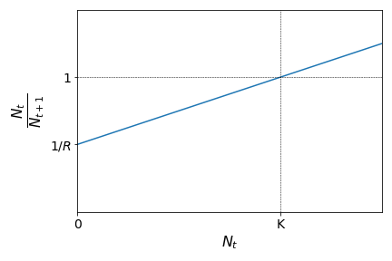
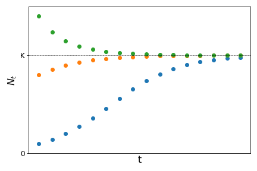

03 - Analysing change, one step at a time#
Imagine a colony of wasps is founded by a queen with the following pattern of eggs laid:
Days |
Eggs |
|---|---|
\(0\) |
\(100\) |
\(1\) |
\(135\) |
\(2\) |
\(170\) |
\(3\) |
\(205\) |
\(4\) |
\(240\) |
Since there is an additive pattern for the increase in the total number of eggs laid, with the number of eggs in any given day, we can determine the number of eggs the colony will have in the following day. If we index the days by a sequence of natural numbers n, we have for the above colony:
where \(a_n\) represents the total amount of eggs in a given day \(n\) and \(a_{n+1}\) the same variable on the day following day \(n\). The constant \(35\) represents the daily increment (or decrement) on this total number. A sequence of number built with constant additive increments receives the name of arithmetic progression.
The above expression defines an iterative process (also known as a recursion) with which we can construct the whole sequence starting from a single initial value. If we want to know how many eggs will have been laid on a given day \(n\), this shall be given by the expression:
Thus, the total amount of eggs laid on day \(n=100\) is \(a_{100} = 100 + 35 \cdot 100 = 3600\).
Now imagine a single *Escherichia coli* cell put on a Petri dish with a favorable growth medium. If given the right conditions, *E. coli* cells divide, generating two other cells, in a time of approximately $30$ minutes. For our experiment, we would have:
Minutes |
# cells |
|---|---|
\(0\) |
\(1\) |
\(30\) |
\(2\) |
\(60\) |
\(4\) |
\(90\) |
\(8\) |
\(120\) |
\(16\) |
If \(t\) represents the number of reproduction intervals since the start of the experiment (assuming values \(t=0, 1, 2, \ldots\)), then we can construct the recursion:
where \(N_t\) represents the number of E. coli cells after \(t\) intervals of reproduction (each interval corresponding to \(30\) minutes) and \(N_{t+1}\) represents the number of cells on the interval following \(t\). See that this time the constant \(2\) provides a multiplicative increment, so that the sequence formed by this multiplicative iteration is called geometric progression.
If we want \(N_t\) for a given interval \(t\), we then have:
leading to an exponential growth in discrete steps.
In general, if we have a population growth described by a geometric progression, starting with a number of individuals \(N_0\), the number of individuals on the subsequent generations can be described by the recursion:
where \(t\) indicates the number of generations and \(R\) is a positive constant (\(R>0\)).
With this recursion, starting from \(N_0\), we can obtain the full sequence by construction:
From this process of construction, we can obtain what we call the solution of the above recursion, given by:
In problems of population dynamics, \(R\) is called growth constant and its value determines the long-term behaviour of the function:

Sequences#
The two last problems are examples of sequences for which a formal definition is given as:
in other words, a sequence is a function \(f\) from the set of natural numbers to the set of real numbers. For each value of the independent variable \(n\) (a natural number), the sequence determines its image \(f(n)\).
Example
The sequence defined by the rule \(f(n) = \displaystyle\frac{1}{n+1}\) defines the sequence of numbers (starting from \(n=0\)):
corresponding to the set of values \(n=0,1,2,3,4,\ldots\).
Sequences are usually written as ordered lists of numbers \(a_0, a_1, a_2, a_3, \ldots\) where \(a_n=f(n)\) and referred to with the notation \(\{a_n\}\) (which is short for \(\{a_n: n \in {\rm I\!N}\}\), making it explicit that \(n\) is a natural number).
As we have seen before, two forms of representation are possible:
Limits#
In many applications, we are interested to know what is the long-term behaviour of a given sequence \(\{a_n\}\). For example, is a given population tending towards a stable number of individuals as time passes? In other words, we want to know if there is a number \(L\) for which the sequence tends to as \(n\) increases. To represent this we use the following notation:
If such a number exists, we say that the sequence \(\{a_n\}\) is convergent.
Examples
\(a_n = \displaystyle\frac{1}{n+1}: \ \ \ \left\{1,\displaystyle\frac{1}{2},\displaystyle\frac{1}{3},\displaystyle\frac{1}{4},\displaystyle\frac{1}{5},\ldots\right\}\)
Note that each term is smaller than the previous and they are all positive. We can conclude that:\[\lim a_n = 0.\]\(b_n = (-1)^n: \ \ \ \left\{1,-1,1,-1,1,-1,\ldots\right\}\)
The terms in this sequence are alternating between \(1\) and \(-1\), never convergeing for a specific value. Thus, the limit of sequence \(\{b_n\}\) does not exist.
\(c_n = 2^n: \ \ \ \left\{1,2,4,8,16,32,\ldots\right\}\)
For this sequence, the terms are ever increasing. We frequently say that the sequence tends to infinity (or tends to \(\infty\)). However, \(\infty\) represents an abstraction (“ever increasing”), not a specific number. Therefore, the limit for this sequence also does not exist.
\(d_n = \displaystyle\frac{n+2}{n+1}: \ \ \ \left\{2,\displaystyle\frac{3}{2},\displaystyle\frac{4}{3},\displaystyle\frac{5}{4},\displaystyle\frac{6}{5},\ldots\right\}\)
For this sequence, each term is smaller than the previous (look at the decimal forms of the fractions: \(2, 1.5, 1.333\cdots, 1.25, 1.2 \ldots\)) and they are greater than \(1\). We can conclude that:\[\lim a_n = 1.\]
Although there is a formal way to prove that a sequence \(\{a_n\}\) converges to a certain limit, in practice we use a set of rules to apply limits to sequences and composition of sequences.
Tip
Consider two sequences \(\{a_n\}\) and \(\{b_n\}\), and \(C\) as a real constant. If these two sequences are convergent with \(\lim a_n = L\) and \(\lim b_n = M\), we have:
In other other words, if you can decompose a given sequence into the sum, product or division of two other convergent sequences, the limit of this sequence will be the composition of the limits of the two others.
Examples
If \(a_n = \displaystyle\frac{4n^2-1}{n^2}:\)
since as we know: \(\ \lim 4 = 4\ \) and \(\ \lim \displaystyle\frac{1}{n} = 0\).
For recursions, one way to find the limit is to find the solution (corresponding explicit description) and then calculate the limit of the sequence with the limit rules. However, finding the explicit form of a given sequence is not always possible.
There is a procedure to find candidates for the long-term behaviour of a given sequence. We do this by calculating fixed points.
Fixed points are specific values on a given sequence for which all subsequent values equal the first. That is, if \(a\) is a fixed point of the sequence \(\{a_n\}\), and if \(a_0 = a\), then \(a_1 = a\), \(a_2 = a\), and all the other values will be \(a\). Thus, given the recursion \(a_{n+1} = g(a_n)\), if \(a\) is a fixed point we will have:
and the last equation provides a way of find possible values of \(a\).
Example
Consider the following recursion
To obtain the fixed points we calculate:
Starting with \(a_0 = 2\), we can use the recursion to construct the sequence as:
or also: \(\{2.449\cdots,2.711\cdots,2.852\cdots,2.925\cdots, \ldots\}\). We see that starting with \(a_0=2\), we have \(a_n>2\) for all \(n\), with increasing values. Since \(a=3\) is a fixed point, we conclude that \(\lim a_n = 3\).
Example
Whenever we are asking questions like ‘where does this process stabilise’ or ‘how high/much will it be in the end,’ we are interested in the limit of some series. This could be a variety of things, like population size, ground water levels, global mean temperature, number of trees, etc.
Warning
Remember that fixed points are only candidates for long-term behaviour. See for example the recursion:
For the fixed points, we calculate:
Indeed, if we construct the sequence from the recursion starting with any of these two values, all the subsequent elements of the sequence will have the same value. However:
or
showing that for any initial value chosen (different from the fixed points), the sequence will oscillate between two values, without a clear tendency to any limit.
Discrete-time population models#
Sequences are generally used in many applications in Biology. Important examples are models for seasonally breeding populations.
Density-dependent population growth#
As we have seen before, the recursion relation for the exponential growth model is given by \(N_{t+1} = RN_t\). Rearranging the terms of this equation we have:
The left-hand term of the last equation is known as parent-offspring ratio as it denotes the ratio between the population size at time \(t\) (parents) and the population size at the following time \(t+1\) (offspring). Here we are considering a population that breeds without overlapping generations. Each generation breeds, dies, and is replaced by their offspring on the following generation.
On the equation we also see that the parent-offspring ratio is equal to \(\displaystyle\frac{1}{R}\), which is a constant. Therefore, we say that this growth is density-independent as the parent-offspring ratio does not depend on the density of individuals at any time step. Relating the parent-offspring ratio to the value of \(R\) allows us to predict the behaviour of this population in terms of growth or decline:
We know, however, than in real scenarios, that the growth factor of a given population should depend on the current size of that population, due to space or resources limitation. These are called density-dependent effects. One of the simplest methods to include density-dependent effects in this population model is to consider the parent-offspring ratio as a linear function of \(N_t\), instead of a constant. Let us assume that the parent-offspring ratio show the following linear behaviour:
This means that the parent-offspring ratio is smaller than \(1\) (population growth) for values of \(N_t\) smaller than a given population threshold \(K\), and greater than \(1\) (population decline) if the population size is greater than this threshold. The graph above leads to the following expression:
which leads, after rearranging the terms, to:
The previous expression is known as Beverton-Holt recruitment curve (or Beverton-Holt model) and it describes a type of population growth called logistic growth.
The fixed points \(\bar{N}\) for this recursion can be calculated as:
From the last term we can show (try it as an exercise) that \(\bar{N}=0\) and \(\bar{N}=K\) are the two fixed points. Starting from different values for the initial population size \(N_0\) it can be shown that the population tends to \(K\) as time increases as:
The constant \(K\) is know as carrying capacity and represents the maximum population size a given population can reach at a given place, due to intra-specific competition for resources or space.
Watch this video about application of growth models to epidemics.
Annual plants#
Suppose a given population of plants produces, on average \(f\) seeds per individual in the reproductive period. Seeds survive winter with a probability \(\sigma\) and germinate on the next season with probability \(\alpha\) (these seeds reach reproductive maturity on the same season). If \(p_n\) is the plant population size on season \(n\) and \(p_{n+1}\) the population size on the season following \(n\), we shall have:
which correspond to the density-independent model since \(R=\alpha\sigma f\) is a constant.
Now suppose that some of the seeds that were produced on the previous season and survived the previous winter, but did not germinate on the current season, might have a second chance of germinating. They might do so on the following season, provided they survive the winter and germinate on the following season. From the average number of seeds produced last season \(fp_{n-1}\), a number \(\sigma fp_{n-1}\) of them survived last winter. From this number, a fraction \((1-\alpha)\) did not germinate this season (1 minus the probability of germinating). These seeds will have a second chance provided they survive next winter (with probability \(\sigma\)) and germinate on the next season (with probability \(\alpha\)). Thus, the number plant population size on the season following \(n\) will be:
where \(\beta=\alpha\sigma f\) and \(\gamma = \alpha(1-\alpha)\sigma^2 f\).
The previous model is an example of a discrete population model with overlapping populations. Since the term \(n+1\) depends not only on the term \(n\) but also on \(n-1\) this is called a second-order difference equation or delay (or lagged) difference equation.
Fibonacci sequence#
The Fibonacci sequence is a sequence defined by the following rule: each number is equal to the sum of the previous two numbers (starting with \(0\) and \(1\)). Thus the following sequence might be formed:
It can also be defined by the second-order difference equation:
Although this is clearly not a convergent sequence (with sustained growth for each element), if we define a new sequence given by the ratio between successive elements of the Fibonacci sequence as \(b_n = \displaystyle\frac{F_{n+1}}{F_n}\), it can be show that this sequence is convergent.
Assuming that \(\lim \displaystyle\frac{F_{n+1}}{F_n} = \lambda\), we have:
The previous equation is solved finding the roots of the second-degree polynomial, which gives \(\lambda = \displaystyle\frac{1+\sqrt{5}}{2}\) or \(\lambda = \displaystyle\frac{1-\sqrt{5}}{2}\). Since the solution \(\displaystyle\frac{1-\sqrt{5}}{2}\) is negative, it can be the limit of the ratio of Fibonacci terms (all of them positive). Hence we conclude:
The previous number is known as the Golden ratio and it has fascinated mathematicians, phylosophers, and artists since ancient times. Fibonacci numbers and the Golden ratio can be found in several interesting natural patterns, as you can see in this video.